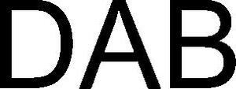

Trade Mark Journal No.2025/022 30 May 2025
WO0000001854076 (12)
Office of origin: France
Date of International Registration:17 December 2024
Date of designation in the UK:
17 December 2024

International priority date claimed: 25 June 2024
(France)
(5065139)
- Class 12
- Armrests for automobile seats; electric aircraft; hydrofoils for boats; anti-theft alarms for cars; cigar lighters for automobiles; shock absorbers for automobiles; shock absorbers for handlebars [parts of motorcycles]; shock absorbers for motorcycles; anti-theft devices to be attached to motor vehicle steering wheels; steering apparatus for ships [non-automatic]; electric gear shifting apparatus for land vehicle motors and engines; head-rests for car seats; head supports for automobile seats; propeller shafts for boats; motor buses; camping cars; camping cars [leisure vehicles]; motor coaches; electric coaches; gyrocopters; automobiles; snowmobiles; railcars; internal combustion railcars; electric reversing alarms for vehicles; horns for motorcycles; audio warning devices for motorbikes; stroller covers; pre-shaped covers especially designed for boats; ferry boats; storage trays for cars; tires for automobiles; bike grip tape; steering wheels for boats; torsion bars for automobiles; helms for boats; boats; water jet boats; motorboats; steam-boats; paddle steamers; sailboats; competition boats; fishing boats; pleasure boats; recreational jet boats; inflatable boats; flat boats; foldable boats; ships for transport of travelers; boats for sale in kit form; spoilers for automobile vehicles; motorcycle kickstands; motorcycle kickstands; kickstands for motorcycles; concrete mixing vehicles; electric bicycles; folding electric bicycles; automatic gearboxes for land vehicles; automatic gearboxes for automobiles; gearboxes for automobiles; booms for boats; davits for boats; fuel tank caps for automobiles; swing arms for motorcycles; dining cars [carriages]; clutch cables [parts of motorcycles]; brake cables [parts of motorcycles]; fork dust boots [parts of motorcycles]; motorcycle frames; motorbike frames; automatically-guided [driverless] material handling vehicles; electric trucks [vehicles]; motor boats; hoods baby carriages; mobile hoods for cars; hoods for boats; car trunk lids; automobile hoods; automobile bodies; bodies for motor vehicles; crankcases for vehicle components other than for motors and engines; safety belts for vehicles and for automobiles; ashtrays for automobiles; roller chains for motorcycles; anti-skid chains for motor vehicle wheels; motorcycle chains; motorbike chains; transmission chains for motorbikes; automobile chains; chains for motor vehicles; chains for motor vehicles [driving]; inner tubes for motorcycle tires; inner tubes for two-wheeled motor vehicles or bicycles; motorized luggage carts; foldable and non-motorized luggage carts; launching trolleys for boats; car creepers for use in inspecting the underneath of cars; electric lifting cars; non-motorized carts for transporting food; carts in the form of motorized land vehicles; electric forklift trucks; automobile chassis; chassis for automobile vehicles; boat chocks; hydraulic circuits for automobiles; roof boxes for motor vehicles; cases and bags for motorcycles; panniers adapted for motorcycles; torque converters for automobiles; ships' hulls; air bags [safety devices for automobiles]; seat cushions for boats; child booster cushions for motor vehicle seats; special cushions for car seats; boat hooks; boat hooks; fenders for ships; non-skid devices for automobile tires; anti-theft devices for automobiles; anti-theft devices for motor vehicles; motorized drive devices for land vehicles; steering gear for ships; maneuvering devices for boats; wear protection devices for boats; propeller blade protectors for boats; disengaging gear for boats; brake disks [parts of bikes]; brake disks for motorbikes; dredgers [boats]; sun shields and sun visors for automobiles; structural elements of buses; structural parts for motor vehicles; structural parts for boats; structural elements for motor vehicles; electric watercraft; front spacers [parts of motorcycles]; storage spaces attached to seat backs specially adapted for use in cars; wipers for motor vehicles; headlight wipers for cars; brake calipers [parts of motorcycles]; electric wheelchairs; motorized wheelchairs for persons with disabilities and reduced mobility; front forks for motorcycles; automobile roof racks; mudguards for motorbikes; chain guards for two-wheeled motor vehicles; brake linings for automobiles; interior fittings of automobiles; interior fittings for motor vehicles; boat rudders; operating rudders and mechanisms for boats; rudders for boats; self-propelled spreaders; power trains for land vehicles; power trains, including motors for land vehicles; motorcycle handlebars; handlebars [parts of motorcycles]; safety harnesses for car seats for children; security harnesses for automobile seats; safety harnesses for automobile racing; harnesses for car seats; motorized tailgates for trucks; screw propellers [for boats]; propellers for boats; adjustable covers for bikes; fitted covers for boats and water vehicles; saddle covers for motorcycles; saddle covers for bicycles or motorcycles; saddle covers for bicycles or motorcycles; shaped seat covers for motor vehicles; steering wheel covers for automobiles; saddle covers for motorcycles; seat covers for cars; covers for car seats [shaped or adjustable]; shaped covers for boats; shaped covers for motor cars; portholes [for boats]; electric anti-theft installations for vehicles; wheel rims for motorcycles; wheel rims for motor vehicles; wheel rims for automobiles; rubber safety rims for car mudguards; motorized food kiosks; horns for automobiles; handle bar control levers [motorcycle parts]; gear shifts [parts of motorcycles]; gear levers for motor vehicles; electric locomotives; non-electric couplings [parts of motors and engines for land vehicles]; non-electric couplings [parts of drives for land vehicles]; cranks for motorbikes; boat masts; masts for boats; automatic mechanisms for watercraft steering; clutch mechanisms for automobiles; motorized drive mechanisms for land vehicles; minikikes; self-balancing unicycles; electric unicycles; motorcycle engines; motorcycle engines; motor vehicle motors and engines; electric motors with gears for land vehicles; electric motors for wheelchairs; electric motors for automobiles; electric motors for land vehicles; motorcycles; motorcycles; geared motors for land vehicles; bikes for motocross; fitted pushchair mosquito nets; wheel hubs for vehicles [motorcycles]; baskets for pushchairs; automobile windshields; windshields for motor vehicles; bumpers for boats; bumpers for automobiles; sun visors for automobile windshields; sun visors for motor vehicles; sun visors [blinds] for automobiles; structural motorcycle parts; brake pedals [parts of motorcycles]; bike pedals; car body parts; car body modification parts for sale in kit form; motorcycle drive gears; inclined ways for boats; brake pads for automobiles; chain wheels for motorcycles; pneumatic automobile tires; tires and inner tubes for motorcycles; tires (pneumatic) for automobiles; tires for buses; tires for motorcycles; tires for motor vehicles; handlebar grips [parts of motorcycles]; door handles for motor vehicles; twist grips for motorcycles; air pumps for motorbikes; air pumps for motor vehicles; luggage carriers for motorcycles; luggage racks for automobiles; ski carriers for automobiles; ski carriers for automobiles; glass holders for automobiles; doors for automobiles; screw-propellers for boats; anti-scratch guards for car door handles; self-inflating rafts for transport; oars for boats; spokes for automobiles; spokes for motorbikes; trailers for boats and ships; footrests for motorcycles; shock absorbing springs for motor vehicles; suspension springs for automobiles; wheels of automobiles; freewheels for motorbikes; wheels for bikes; motor scooters; motorized scooters for disabled and mobility-impaired persons; water scooters; snow scooters; electric scooters; one-wheeled electric scooters; scooters for transport; scooters for people with reduced mobility; self-balancing electric scooters; brake segments for automobiles; brake segments for cars; motorcycle saddles; saddles for bicycles or motorcycles; saddles for motorcycles; child safety seats for automobiles; safety seats for children, for automobiles; car safety seats for children; car seats for children; seats of convertible cars; child seats for cars; seats for motor vehicles; turn signal indicator lights for motor vehicles; bellows for articulated buses; sun-blinds adapted for automobiles; sun-blinds adapted for automobiles; electric jump seats; headlight holders [motorcycle parts]; spare wheel holders for motor vehicles; car alarm systems; suspension systems for motor vehicles; front dash panels [parts of motorcycles]; boat cleats; car roofs; convertible roofs, namely, car elements; convertible tops for automobiles; electric sunroofs for vehicles; automatic [driverless] tractors for handling materials; electric tractors [vehicles]; undercarriages for vehicles; electric trains; automatic transmissions for land vehicles; car transporters; electric trolley buses; pedal scooters; electric scooters [vehicles]; motorized and non-motorized scooters for personal transportation; non-motorized scooters [vehicles]; scooters (vehicles); scooters [vehicles]; vessels [boats and ships]; automated guided vehicles; electric motor vehicles; self-loading vehicles; motor vehicles; land motor vehicles; self-propelled loading vehicles; self-driving transport vehicles; electric vehicles; self-propelled electric vehicles; two-wheeled motor vehicles; autonomous underwater vehicles for seabed inspections; automobile land vehicles; electric land vehicles; electric bikes; rear windows for cars; windows for automobiles; cars; automobiles for land transport; passenger automobiles; railway carriages; racing cars; golf carts; sports cars; sports cars sold in kit form; tramcars; electric cars; refrigerated trucks; hybrid cars; driverless cars; driverless cars [autonomous cars]; golf carts [vehicles]; motorized and computerized golf carts; motorized golf carts; electric rail freight cars; vehicles; apparatus for locomotion by land; apparatus for locomotion by air; apparatus for locomotion by sea; suspension shock absorbers for vehicles; bodies for vehicles; anti-skid chains; vehicle chassis; vehicle bumpers; sun-blinds adapted for motorized land vehicles; safety belts for vehicle seats; electric vehicles; caravans; tractors; mopeds; cycles; cycle frames; cycle kickstands; cycle brakes; cycle handlebars; cycle rims; cycle pedals; cycle tires; cycle wheels; cycle saddles; strollers; handling carts.
DBMC
Representative: Monsieur FIEVRE Benjamin CABINET VIDON Marques & Juridique PI, Technopole Atalante,, 16B rue de Jouanet, F-35700 RENNES, FRANCE